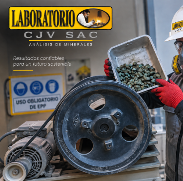
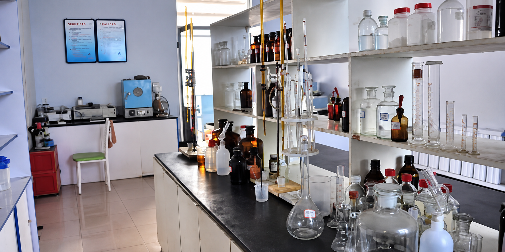
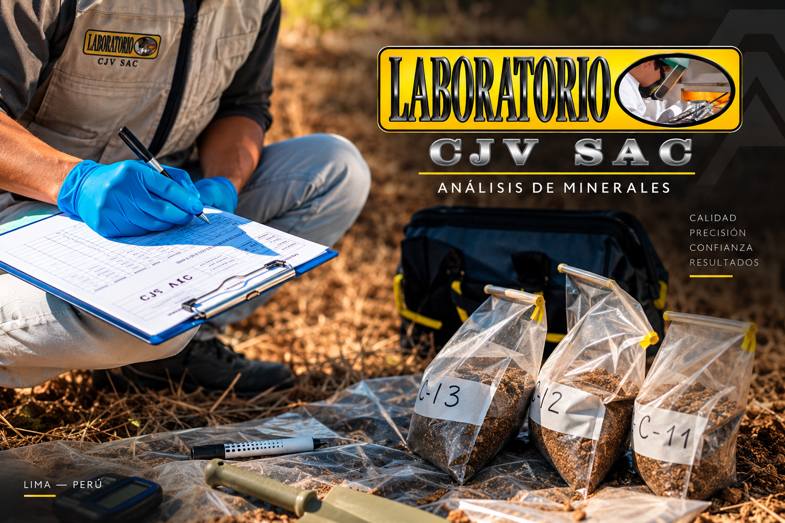
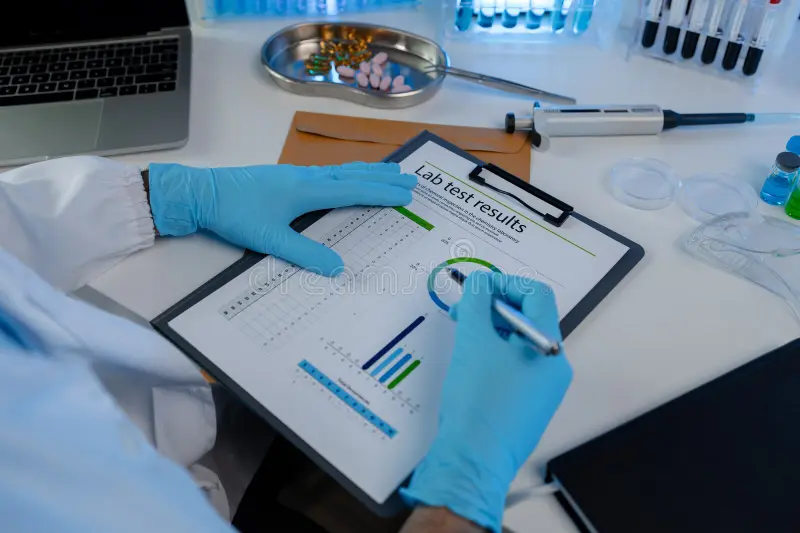
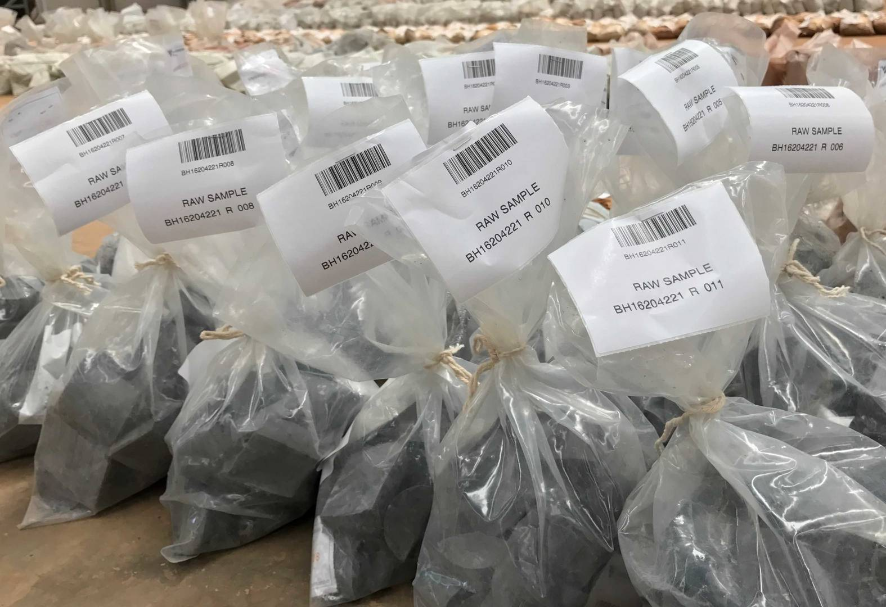

Rapidez
Atención orientada a obtener y entregar resultados oportunos según el análisis solicitado.
Servicios especializados para el análisis de minerales, concentrados y diferentes tipos de muestras mediante procedimientos de laboratorio orientados a brindar resultados confiables.


LABORATORIO CJV S.A.C. inicia sus actividades como Laboratorio de ensayos para el Análisis de Minerales en la ciudad de Lima en el año 2012.
Desde entonces desarrolla servicios orientados al análisis químico y metalúrgico de minerales, concentrados y diferentes tipos de muestras.
Entre sus principales servicios se encuentran el Análisis Químico, Ensayo al Fuego, Absorción Atómica, Vía Clásica y Pruebas Metalúrgicas.
Para el desarrollo de sus actividades, LABORATORIO CJV S.A.C. toma como referencia los lineamientos de la NTP ISO/IEC 17025:2017.
El laboratorio busca brindar atención eficiente, soporte técnico y manejo responsable de la información relacionada con cada servicio.

Atención orientada a obtener y entregar resultados oportunos según el análisis solicitado.

Orientación para atender consultas relacionadas con las muestras, procedimientos y servicios.
Manejo responsable de la información de los clientes y de los resultados obtenidos.

Atención adaptable a diferentes tipos de muestras y necesidades de análisis.
Servicios orientados al análisis químico y metalúrgico de minerales, concentrados y diferentes tipos de muestras.
Evaluación química de muestras minerales mediante procedimientos especializados de laboratorio.
↗Procedimiento utilizado principalmente para análisis relacionados con metales preciosos.
↗Técnica instrumental utilizada para determinar la concentración de determinados elementos presentes en una muestra.
↗Métodos y procedimientos tradicionales empleados para diferentes determinaciones químicas.
↗Evaluaciones técnicas orientadas al estudio y comportamiento de diferentes muestras minerales.
↗Cada muestra sigue un proceso organizado desde su recepción hasta la emisión del certificado final de análisis.
Registramos los datos del cliente, la muestra recibida y el tipo de análisis solicitado.
La muestra es acondicionada y preparada de acuerdo con el procedimiento requerido.
Se ejecuta el análisis químico o metalúrgico correspondiente al servicio solicitado.
Los resultados obtenidos son registrados y revisados antes de emitir el resultado final.
Finalmente se genera el certificado de análisis con los resultados correspondientes.
Como parte del control del proceso analítico se aplican procedimientos orientados a verificar la veracidad, precisión y posible contaminación durante los análisis.
Se insertan estándares certificados en el 5% de cada lote como parte del control de veracidad de los resultados obtenidos.
El 10% de las muestras de cada lote son analizadas por duplicado para controlar la precisión del procedimiento.
El 5% del lote corresponde a blancos de reactivos utilizados para verificar posibles fuentes de contaminación.
Para el desarrollo de sus actividades, LABORATORIO CJV S.A.C. toma como referencia la NTP ISO/IEC 17025:2017.
Revisa información relacionada con el servicio, pagos, recepción de muestras, contramuestras, encomiendas y entrega de certificados.
El servicio se realiza de acuerdo con el tipo de análisis solicitado, las características de la muestra y la cantidad de elementos requeridos.
El tiempo de atención puede variar según la cantidad de muestras recibidas y los procedimientos necesarios para cada análisis.
La información relacionada con el costo del servicio debe ser coordinada directamente con LABORATORIO CJV S.A.C.
Para la emisión de documentos relacionados con el servicio se solicitarán los datos correspondientes del cliente.
Las muestras deben encontrarse debidamente identificadas para facilitar su registro y trazabilidad durante el proceso de análisis.
La cantidad requerida dependerá del tipo de muestra y del análisis solicitado por el cliente.
Para el envío de muestras mediante encomienda se recomienda coordinar previamente con el laboratorio los datos necesarios para su recepción y recojo.
Los resultados corresponden exclusivamente a las muestras que fueron sometidas al análisis solicitado.
El certificado de análisis se genera utilizando la información registrada para el cliente, la muestra y los resultados obtenidos en el laboratorio.
Ingresa el código asignado durante la recepción para consultar el estado actual del proceso de análisis.
Cuando conectemos el sistema con la base de datos, esta sección mostrará el estado real de la muestra.
Para solicitar información sobre servicios, análisis de muestras o cotizaciones puedes comunicarte directamente con LABORATORIO CJV S.A.C.
Escríbenos directamente por WhatsApp.